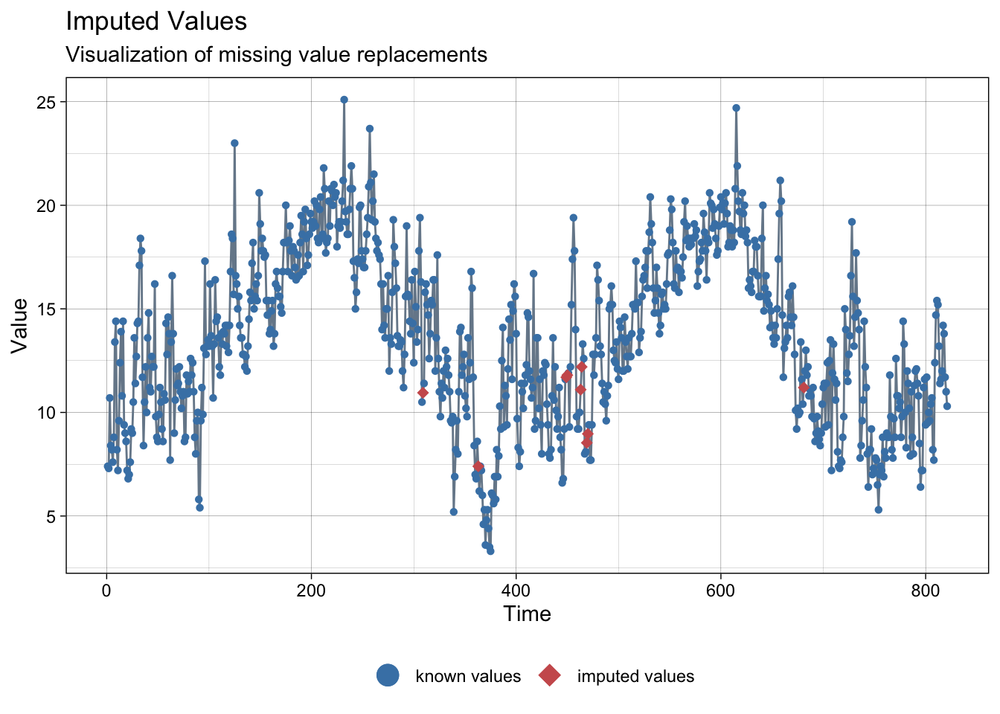
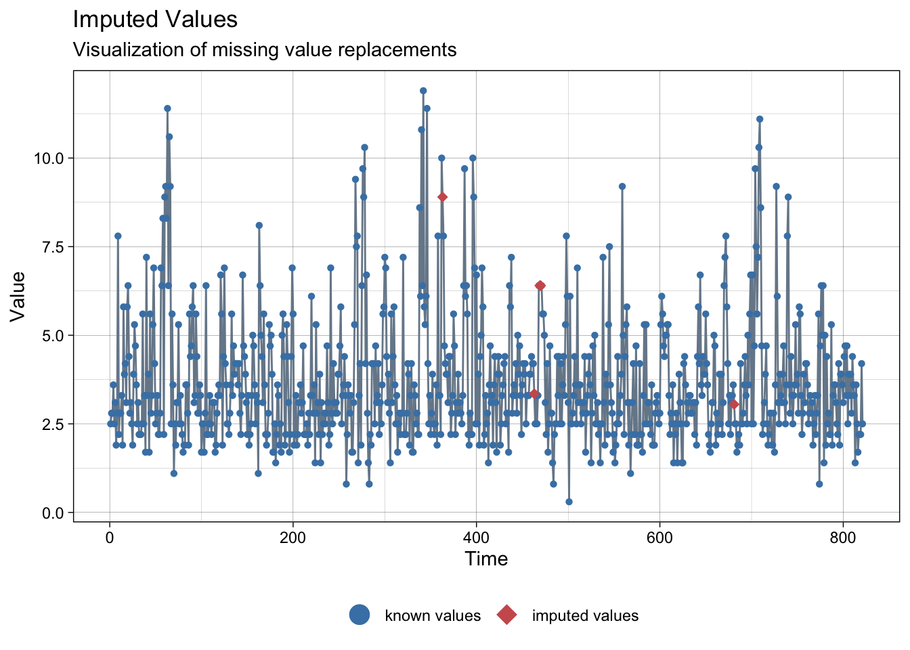
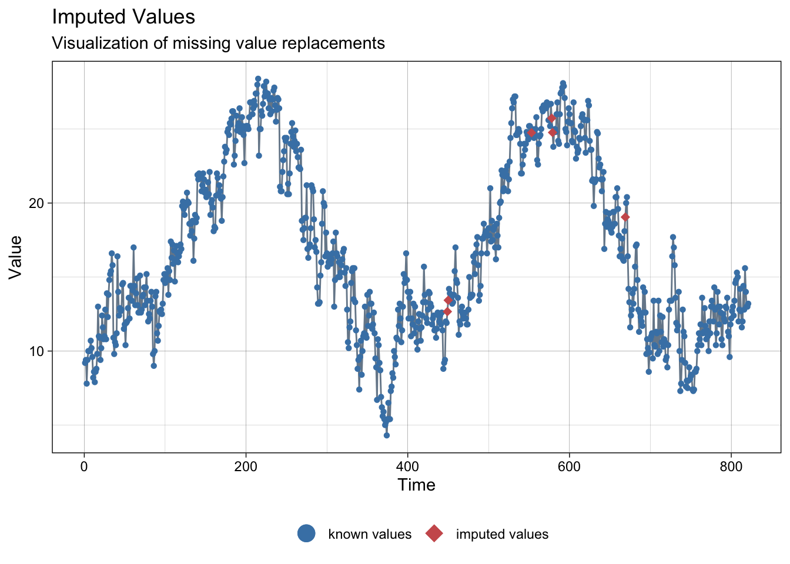
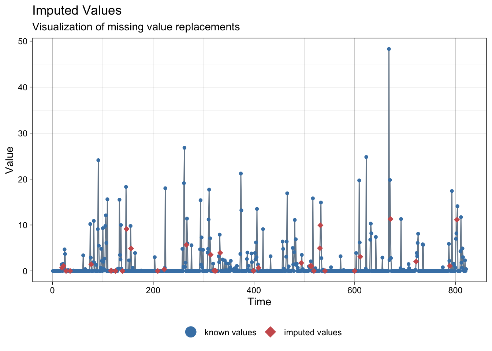
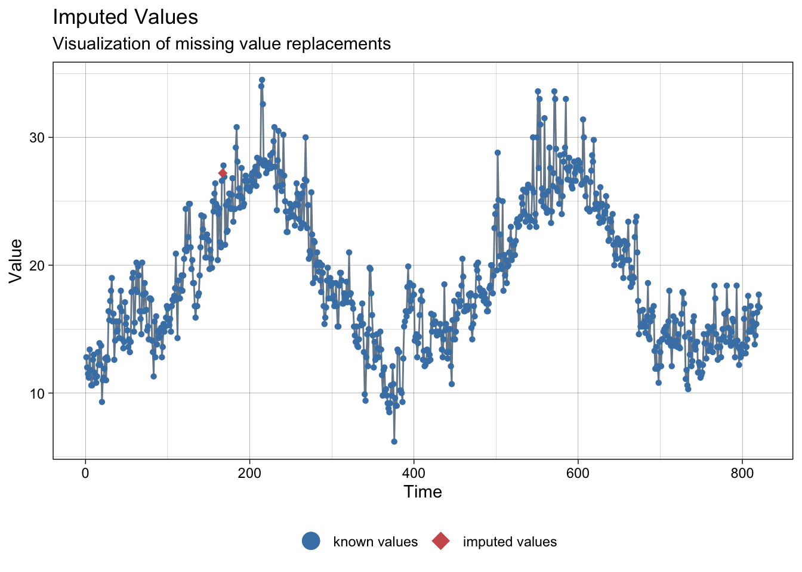
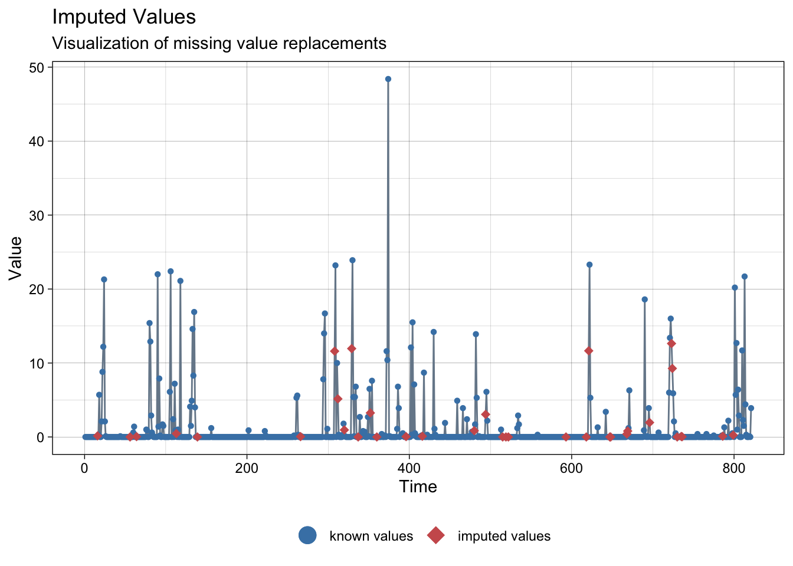

pacman::p_load(
here, # file locator
tidyverse, # data management and ggplot2 graphics
skimr, # get overview of data
janitor, # produce and adorn tabulations and cross-tabulations
tsibble, # manage time series
imputeTS, # impute NAs for time series
jsonlite # read json files
)4 AEMET data
Load packages:
Data is available in the Spanish State Meteorological Agency through its opendata platform link.
AEMET OpenData is a REST API (Application Programming Interface. REpresentational State Transfer) through which data can be downloaded free of charge.
AEMET OpenData allows two types of access where both allow access to the same data catalog and data download in reusable formats:
General Access: It is a graphical access, intended for the general public. Its purpose is to allow access to data for users in a friendly way. The interaction with the data is characterized by being punctual, carried out through friendly interfaces intended for a human, directed step by step and through the choice of different options.
AEMET OpenData API: it allows another type of interaction with the data: this interaction is characterized by the possibility of being periodic and even programmed, from any programming language, without friendly interfaces, with the possibility of self-discovery and allows information reusers to include AEMET data in their own information systems.
Last one method was used to download data from:
- Asturias airport
- Barcelona airport
- Madrid airport
- Málaga airport
- Sevilla airport
# List aemet raw json files
meteo_files <- list.files(
path = here("data", "raw"),
recursive = TRUE,
full.names = TRUE,
pattern = "*meteo.json"
)Load and deserialize json files.
meteo_data <- map_dfr(
.x = meteo_files,
.f = ~fromJSON(.x, flatten = TRUE)
) %>% as_tibble()
meteo_data# A tibble: 4,105 × 20
fecha indicativo nombre provincia altitud tmed prec tmin horatmin tmax
<chr> <chr> <chr> <chr> <chr> <chr> <chr> <chr> <chr> <chr>
1 2020-01… 1212E ASTUR… ASTURIAS 127 7,4 0,0 3,8 19:42 11,0
2 2020-01… 1212E ASTUR… ASTURIAS 127 7,3 0,0 3,2 05:14 11,4
3 2020-01… 1212E ASTUR… ASTURIAS 127 10,7 0,7 7,4 22:57 14,0
4 2020-01… 1212E ASTUR… ASTURIAS 127 8,4 2,4 5,6 18:32 11,1
5 2020-01… 1212E ASTUR… ASTURIAS 127 8,2 0,0 4,7 03:39 11,8
6 2020-01… 1212E ASTUR… ASTURIAS 127 7,6 0,0 2,8 01:53 12,3
7 2020-01… 1212E ASTUR… ASTURIAS 127 8,8 0,0 4,3 07:38 13,3
8 2020-01… 1212E ASTUR… ASTURIAS 127 13,4 0,0 9,0 Varias 17,7
9 2020-01… 1212E ASTUR… ASTURIAS 127 14,4 5,5 8,7 22:53 20,2
10 2020-01… 1212E ASTUR… ASTURIAS 127 8,2 0,6 4,9 23:46 11,6
# … with 4,095 more rows, and 10 more variables: horatmax <chr>, dir <chr>,
# velmedia <chr>, racha <chr>, horaracha <chr>, sol <chr>, presMax <chr>,
# horaPresMax <chr>, presMin <chr>, horaPresMin <chr>All the information corresponds to airports.
table(meteo_data$nombre)
ASTURIAS AEROPUERTO BARCELONA AEROPUERTO MADRID AEROPUERTO
821 821 821
MÁLAGA AEROPUERTO SEVILLA AEROPUERTO
821 821 Data statistics:
skim(meteo_data)| Name | meteo_data |
| Number of rows | 4105 |
| Number of columns | 20 |
| _______________________ | |
| Column type frequency: | |
| character | 20 |
| ________________________ | |
| Group variables | None |
Variable type: character
| skim_variable | n_missing | complete_rate | min | max | empty | n_unique | whitespace |
|---|---|---|---|---|---|---|---|
| fecha | 0 | 1.00 | 10 | 10 | 0 | 821 | 0 |
| indicativo | 0 | 1.00 | 4 | 5 | 0 | 5 | 0 |
| nombre | 0 | 1.00 | 17 | 20 | 0 | 5 | 0 |
| provincia | 0 | 1.00 | 6 | 9 | 0 | 5 | 0 |
| altitud | 0 | 1.00 | 1 | 3 | 0 | 5 | 0 |
| tmed | 31 | 0.99 | 3 | 4 | 0 | 312 | 0 |
| prec | 6 | 1.00 | 2 | 4 | 0 | 243 | 0 |
| tmin | 31 | 0.99 | 3 | 5 | 0 | 315 | 0 |
| horatmin | 31 | 0.99 | 5 | 6 | 0 | 673 | 0 |
| tmax | 30 | 0.99 | 3 | 4 | 0 | 363 | 0 |
| horatmax | 30 | 0.99 | 5 | 6 | 0 | 588 | 0 |
| dir | 68 | 0.98 | 2 | 2 | 0 | 37 | 0 |
| velmedia | 45 | 0.99 | 3 | 4 | 0 | 48 | 0 |
| racha | 68 | 0.98 | 3 | 4 | 0 | 65 | 0 |
| horaracha | 68 | 0.98 | 5 | 6 | 0 | 1018 | 0 |
| sol | 78 | 0.98 | 3 | 4 | 0 | 144 | 0 |
| presMax | 44 | 0.99 | 5 | 6 | 0 | 636 | 0 |
| horaPresMax | 44 | 0.99 | 2 | 6 | 0 | 20 | 0 |
| presMin | 44 | 0.99 | 5 | 6 | 0 | 681 | 0 |
| horaPresMin | 44 | 0.99 | 2 | 6 | 0 | 26 | 0 |
Some cleaning is needed.
First of all, we will remove useless columns for further analysis and rename the others. Secondly, we will transform date to a valid format. Last but not least, we will transform numeric data to a valid numeric format.
meteo_data <- meteo_data %>%
select(-indicativo, -nombre, -altitud, -horatmin, -horatmax, -horaracha, -presMax, -horaPresMax, -presMin, -horaPresMin) %>%
mutate(
fecha = as.Date(fecha, format = "%Y-%m-%d"),
tmed = as.numeric(sub(",", ".", tmed, fixed = TRUE)),
prec = as.numeric(sub(",", ".", prec, fixed = TRUE)),
tmin = as.numeric(sub(",", ".", tmin, fixed = TRUE)),
tmax = as.numeric(sub(",", ".", tmax, fixed = TRUE)),
dir = as.numeric(sub(",", ".", dir, fixed = TRUE)),
velmedia = as.numeric(sub(",", ".", velmedia, fixed = TRUE)),
racha = as.numeric(sub(",", ".", racha, fixed = TRUE)),
sol = as.numeric(sub(",", ".", sol, fixed = TRUE))
) %>%
rename(
wd = dir,
ws = velmedia,
ws_max = racha
)Warning in mask$eval_all_mutate(quo): NAs introducidos por coerciónmeteo_data# A tibble: 4,105 × 10
fecha provincia tmed prec tmin tmax wd ws ws_max sol
<date> <chr> <dbl> <dbl> <dbl> <dbl> <dbl> <dbl> <dbl> <dbl>
1 2020-01-01 ASTURIAS 7.4 0 3.8 11 99 2.5 7.8 7.9
2 2020-01-02 ASTURIAS 7.3 0 3.2 11.4 22 2.8 10.3 2.8
3 2020-01-03 ASTURIAS 10.7 0.7 7.4 14 99 2.8 9.7 1.9
4 2020-01-04 ASTURIAS 8.4 2.4 5.6 11.1 99 3.6 7.2 0.7
5 2020-01-05 ASTURIAS 8.2 0 4.7 11.8 13 2.5 7.2 8.6
6 2020-01-06 ASTURIAS 7.6 0 2.8 12.3 22 3.1 8.9 6.3
7 2020-01-07 ASTURIAS 8.8 0 4.3 13.3 99 1.9 8.9 8
8 2020-01-08 ASTURIAS 13.4 0 9 17.7 22 2.8 8.3 6.1
9 2020-01-09 ASTURIAS 14.4 5.5 8.7 20.2 29 7.8 24.2 4.3
10 2020-01-10 ASTURIAS 8.2 0.6 4.9 11.6 28 2.2 16.1 1.9
# … with 4,095 more rowsIn order to unify the data with other available sources, a rename of the provinces it needed.
meteo_data <- meteo_data %>%
mutate(
provincia = case_when(
provincia == "ASTURIAS" ~ "Asturias",
provincia == "BARCELONA" ~ "Barcelona",
provincia == "MADRID" ~ "Madrid",
provincia == "MALAGA" ~ "Málaga",
provincia == "SEVILLA" ~ "Sevilla",
TRUE ~ provincia
)
)
unique(meteo_data$provincia)[1] "Asturias" "Barcelona" "Madrid" "Málaga" "Sevilla" The data has missing information.
skim(meteo_data)| Name | meteo_data |
| Number of rows | 4105 |
| Number of columns | 10 |
| _______________________ | |
| Column type frequency: | |
| character | 1 |
| Date | 1 |
| numeric | 8 |
| ________________________ | |
| Group variables | None |
Variable type: character
| skim_variable | n_missing | complete_rate | min | max | empty | n_unique | whitespace |
|---|---|---|---|---|---|---|---|
| provincia | 0 | 1 | 6 | 9 | 0 | 5 | 0 |
Variable type: Date
| skim_variable | n_missing | complete_rate | min | max | median | n_unique |
|---|---|---|---|---|---|---|
| fecha | 0 | 1 | 2020-01-01 | 2022-03-31 | 2021-02-14 | 821 |
Variable type: numeric
| skim_variable | n_missing | complete_rate | mean | sd | p0 | p25 | p50 | p75 | p100 | hist |
|---|---|---|---|---|---|---|---|---|---|---|
| tmed | 31 | 0.99 | 16.60 | 6.44 | -6.2 | 12.0 | 15.6 | 21.0 | 34.5 | ▁▂▇▅▂ |
| prec | 149 | 0.96 | 1.74 | 6.20 | 0.0 | 0.0 | 0.0 | 0.1 | 87.9 | ▇▁▁▁▁ |
| tmin | 31 | 0.99 | 11.66 | 6.22 | -13.4 | 7.4 | 11.3 | 16.0 | 27.5 | ▁▁▇▇▂ |
| tmax | 30 | 0.99 | 21.53 | 7.28 | 0.3 | 16.2 | 20.3 | 26.4 | 44.9 | ▁▇▇▃▁ |
| wd | 68 | 0.98 | 41.65 | 36.42 | 1.0 | 15.0 | 26.0 | 99.0 | 99.0 | ▆▇▁▁▆ |
| ws | 45 | 0.99 | 3.71 | 1.74 | 0.3 | 2.5 | 3.3 | 4.4 | 18.9 | ▇▅▁▁▁ |
| ws_max | 68 | 0.98 | 10.22 | 3.62 | 2.5 | 7.8 | 9.7 | 11.7 | 31.9 | ▆▇▂▁▁ |
| sol | 78 | 0.98 | 6.94 | 4.13 | 0.0 | 3.4 | 7.7 | 10.2 | 14.3 | ▇▅▆▇▅ |
An interpolation for each provinces will be carried out in order to have the maximum information available.
4.1 Asturias
meteo_asturias <- meteo_data %>%
filter(provincia == "Asturias")# NA imputation test
imp <- na_interpolation(meteo_asturias)NAs imputed to average temperature:
ggplot_na_imputations(meteo_asturias$tmed, imp$tmed)
NAs imputed to precipitations:
ggplot_na_imputations(meteo_asturias$prec, imp$prec)NAs imputed to wind speed:
ggplot_na_imputations(meteo_asturias$ws, imp$ws)
Data interpolation test looks good, so we proceed to charge it:
meteo_asturias <- na_interpolation(meteo_asturias)4.2 Barcelona
meteo_barcelona <- meteo_data %>%
filter(provincia == "Barcelona")# NA imputation test
imp <- na_interpolation(meteo_barcelona)NAs imputed to average temperature:
ggplot_na_imputations(meteo_barcelona$tmed, imp$tmed)
NAs imputed to precipitations:
ggplot_na_imputations(meteo_barcelona$prec, imp$prec)NAs imputed to wind speed:
ggplot_na_imputations(meteo_barcelona$ws, imp$ws)Data interpolation test looks good, so we proceed to charge it:
meteo_barcelona <- na_interpolation(meteo_barcelona)4.3 Madrid
meteo_madrid <- meteo_data %>%
filter(provincia == "Madrid")# NA imputation test
imp <- na_interpolation(meteo_madrid)NAs imputed to average temperature:
print("There are not NAs!")[1] "There are not NAs!"NAs imputed to precipitations:
ggplot_na_imputations(meteo_madrid$prec, imp$prec)
NAs imputed to wind speed:
ggplot_na_imputations(meteo_madrid$ws, imp$ws)Data interpolation test looks good, so we proceed to charge it:
meteo_madrid <- na_interpolation(meteo_madrid)4.4 Malaga
meteo_malaga <- meteo_data %>%
filter(provincia == "Málaga")# NA imputation test
imp <- na_interpolation(meteo_malaga)NAs imputed to average temperature:
ggplot_na_imputations(meteo_malaga$tmed, imp$tmed)
NAs imputed to precipitations:
ggplot_na_imputations(meteo_malaga$prec, imp$prec)NAs imputed to wind speed:
print("There are not NAs!")[1] "There are not NAs!"Data interpolation test looks good, so we proceed to charge it:
meteo_malaga <- na_interpolation(meteo_malaga)4.5 Sevilla
meteo_sevilla <- meteo_data %>%
filter(provincia == "Sevilla")# NA imputation test
imp <- na_interpolation(meteo_sevilla)NAs imputed to average temperature:
ggplot_na_imputations(meteo_sevilla$tmed, imp$tmed)NAs imputed to precipitations:
ggplot_na_imputations(meteo_sevilla$prec, imp$prec)
NAs imputed to wind speed:
ggplot_na_imputations(meteo_sevilla$ws, imp$ws)Data interpolation test looks good, so we proceed to charge it:
meteo_sevilla <- na_interpolation(meteo_sevilla)4.6 Data combination
meteo_data_completed <- meteo_asturias %>%
rbind(meteo_barcelona) %>%
rbind(meteo_madrid) %>%
rbind(meteo_malaga) %>%
rbind(meteo_sevilla)
unique(meteo_data_completed$provincia)[1] "Asturias" "Barcelona" "Madrid" "Málaga" "Sevilla" Final statistics:
skim(meteo_data_completed)| Name | meteo_data_completed |
| Number of rows | 4105 |
| Number of columns | 10 |
| _______________________ | |
| Column type frequency: | |
| character | 1 |
| Date | 1 |
| numeric | 8 |
| ________________________ | |
| Group variables | None |
Variable type: character
| skim_variable | n_missing | complete_rate | min | max | empty | n_unique | whitespace |
|---|---|---|---|---|---|---|---|
| provincia | 0 | 1 | 6 | 9 | 0 | 5 | 0 |
Variable type: Date
| skim_variable | n_missing | complete_rate | min | max | median | n_unique |
|---|---|---|---|---|---|---|
| fecha | 0 | 1 | 2020-01-01 | 2022-03-31 | 2021-02-14 | 821 |
Variable type: numeric
| skim_variable | n_missing | complete_rate | mean | sd | p0 | p25 | p50 | p75 | p100 | hist |
|---|---|---|---|---|---|---|---|---|---|---|
| tmed | 0 | 1 | 16.62 | 6.45 | -6.2 | 12.0 | 15.6 | 21.10 | 34.5 | ▁▂▇▅▂ |
| prec | 0 | 1 | 1.76 | 6.13 | 0.0 | 0.0 | 0.0 | 0.20 | 87.9 | ▇▁▁▁▁ |
| tmin | 0 | 1 | 11.68 | 6.22 | -13.4 | 7.4 | 11.3 | 16.10 | 27.5 | ▁▁▇▇▂ |
| tmax | 0 | 1 | 21.56 | 7.30 | 0.3 | 16.2 | 20.3 | 26.40 | 44.9 | ▁▇▇▃▁ |
| wd | 0 | 1 | 41.79 | 36.26 | 1.0 | 15.0 | 26.0 | 99.00 | 99.0 | ▆▇▁▁▆ |
| ws | 0 | 1 | 3.72 | 1.73 | 0.3 | 2.5 | 3.6 | 4.40 | 18.9 | ▇▅▁▁▁ |
| ws_max | 0 | 1 | 10.24 | 3.61 | 2.5 | 7.8 | 9.7 | 12.15 | 31.9 | ▅▇▂▁▁ |
| sol | 0 | 1 | 6.97 | 4.12 | 0.0 | 3.5 | 7.7 | 10.30 | 14.3 | ▇▅▆▇▅ |
The final data looks like:
meteo_data_completed# A tibble: 4,105 × 10
fecha provincia tmed prec tmin tmax wd ws ws_max sol
<date> <chr> <dbl> <dbl> <dbl> <dbl> <dbl> <dbl> <dbl> <dbl>
1 2020-01-01 Asturias 7.4 0 3.8 11 99 2.5 7.8 7.9
2 2020-01-02 Asturias 7.3 0 3.2 11.4 22 2.8 10.3 2.8
3 2020-01-03 Asturias 10.7 0.7 7.4 14 99 2.8 9.7 1.9
4 2020-01-04 Asturias 8.4 2.4 5.6 11.1 99 3.6 7.2 0.7
5 2020-01-05 Asturias 8.2 0 4.7 11.8 13 2.5 7.2 8.6
6 2020-01-06 Asturias 7.6 0 2.8 12.3 22 3.1 8.9 6.3
7 2020-01-07 Asturias 8.8 0 4.3 13.3 99 1.9 8.9 8
8 2020-01-08 Asturias 13.4 0 9 17.7 22 2.8 8.3 6.1
9 2020-01-09 Asturias 14.4 5.5 8.7 20.2 29 7.8 24.2 4.3
10 2020-01-10 Asturias 8.2 0.6 4.9 11.6 28 2.2 16.1 1.9
# … with 4,095 more rows